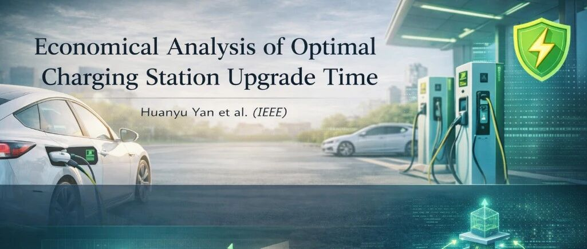
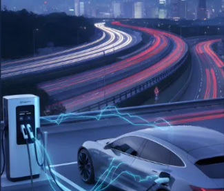
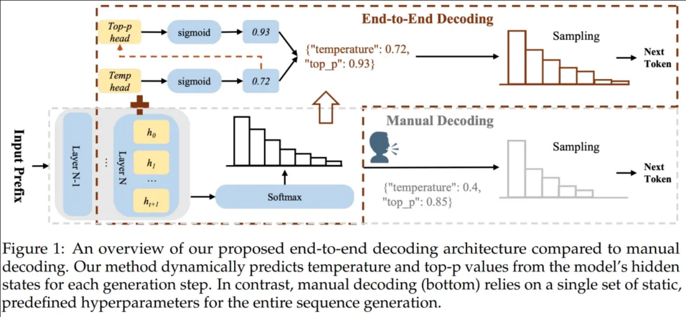
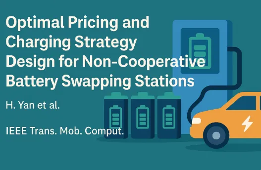
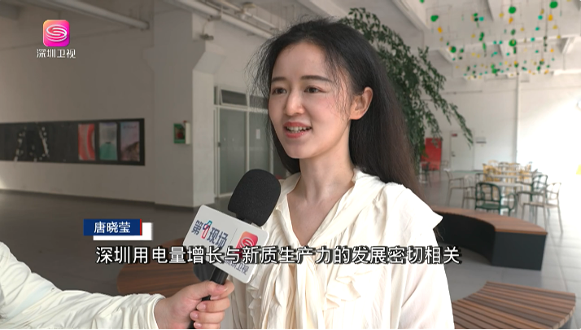
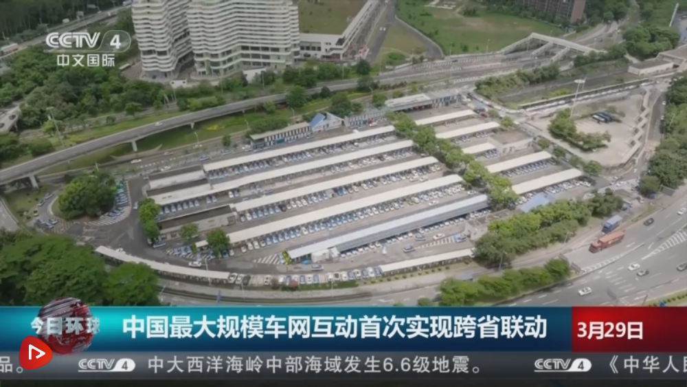
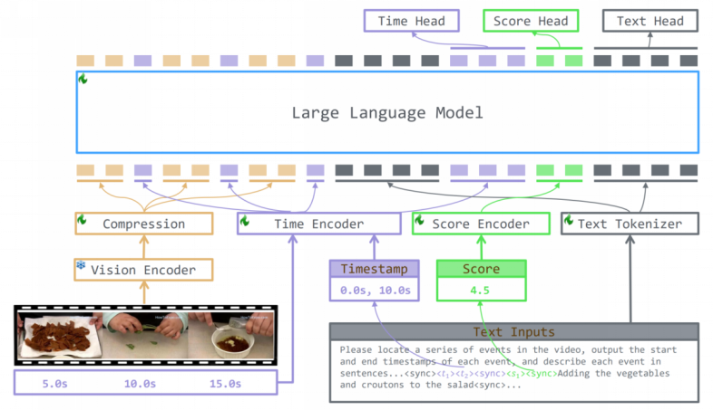
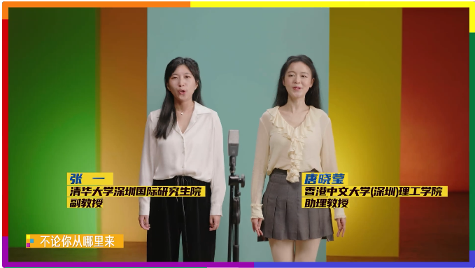

欢迎来到 T-lab
T-Lab 实验室由香港中文大学（深圳）唐晓莹教授领衔，在 NeurIPS、ICML、ICLR、ACL、CVPR、EMNLP、IEEE SmartGridComm 等顶级会议，以及 IEEE TMC、TII、TSG、TPWRS、TTE 等权威期刊上发表了多项高水平成果，并推动成果在智能电网、工业大模型等场景落地。实验室围绕三个方向开展研究：
- 大模型（推理、提示调优、多模态）：强化学习推理增强、端到端解码、视觉链式思维、提示优化与智能体。
- 电动车充电优化与智能：充换电定价与调度、充电站规划、基于前景理论的用户行为建模，算法已应用于全国最大规模车网互动示范工程。
- 联邦学习：非凸与异构场景下的客户端采样、分布偏移、公平性与去中心化协作。
实验室 GitHub：github.com/T-Lab-CUHKSZ


团队荣誉
- 2026唐晓莹教授受邀担任 NeurIPS 2026（CCF A类）领域主席
- 2026唐晓莹教授获 ICML 2026（CCF A类）Silver Reviewer Award
- 2025唐晓莹教授以第一完成人获 2025年度深圳市人工智能学会科技进步奖，并获 2025年度深圳市人工智能学会卓越服务奖
- 2025唐晓莹教授获 2025年广东省大学生数学建模竞赛暨全国大学生数学建模竞赛广东赛区优秀指导教师奖（香港中文大学（深圳）唯一获奖教师），指导学生获 2025年美国大学生数学建模竞赛一等奖
- 2024论文 Strategic V2G Trading in Local Energy Market Considering Minimum Energy Requirement 获 IEEE SmartGridComm 2024 最佳论文奖（唯二）
- 2024论文 FedMABA 获 IEEE ICCT 2024 最佳海报报告奖（唯一，前三位作者均为实验室博士生）
- 2024唐晓莹教授入选 腾讯犀牛鸟专项研究计划（录取率约 14%）
- 2024唐晓莹教授获评 香港中文大学（深圳）校长青年学者
- 2023, 2024唐晓莹教授连续获 香港中文大学（深圳）理工学院年度杰出贡献奖
- 2023论文 RPCover 获 IEEE/ACM ASE 2023 杰出论文奖（唯一一等奖）
- 2022唐晓莹教授入选 广东省“珠江人才计划”青年拔尖人才
- 2021唐晓莹教授入选 深圳市龙岗区深龙英才；获 第七届四川省国际“互联网+”大学生创新创业大赛优秀指导教师奖，指导学生获该赛金奖
- 2020唐晓莹教授入选 深圳市海外高层次人才（孔雀计划C类）
- 2013唐晓莹教授以第一作者发表的论文 Online Speeding Optimal Charging Algorithm for Electric Vehicles without Future Information 获 IEEE SmartGridComm 2013 最佳论文奖（唯一，以英文曾用名 Wanrong Tang 发表）
实验室新闻
- 10/20261篇论文被TMC 2026（CCF A类，中科院1区Top，JCR Q1）接收：AFIND+
- 09/2026唐晓莹教授以第一完成人获2025年度深圳市人工智能学会科技进步奖，并获2025年度深圳市人工智能学会卓越服务奖
- 09/20263篇论文被NeurIPS 2026（CCF A类）接收：GoSkills、FlowSteer、POES
- 08/20263篇论文被EMNLP 2026（CCF B类）主会议接收：RAVE、Voices Across Registers、Plans You Can Check；1篇被EMNLP 2026 Findings接收：SEPO
- 07/2026唐晓莹教授获ICML 2026 Silver Reviewer Award（CCF A类）
- 05/2026唐晓莹教授受邀担任NeurIPS 2026（CCF A类）领域主席（Area Chair）
- 05/20261篇论文被TSG 2026（中科院1区Top，JCR Q1）接收：Charging Station Pricing and Scheduling With Localized Personal Information via Offloading Computation to EVs
- 05/20263篇论文被ICML 2026（CCF A类）接收：Shape of Thought、FedEBA+、DiOpt
- 04/20262篇论文被ACL 2026（CCF A类）主会议接收：G²RPO-A、aPSF；1篇被ACL 2026 Findings接收：RepoShapley
- 02/20261篇论文被TTE 2026（中科院1区Top，JCR Q1）接收：Economical Analysis of Optimal Charging Station Upgrade Time
- 01/20261篇论文被ICLR 2026接收：AutoDeco
- 01/20262篇论文被ICASSP 2026（CCF B类）接收：Multi-Physics、KG2QA
- 01/20261篇论文被IOTJ 2026（JCR Q1）接收：Algorithm Aversion-Aware Optimization of Integrated Electricity Charging and Hydrogen Refueling Pricing
- 12/2025唐晓莹教授获2025年广东省大学生数学建模竞赛暨全国大学生数学建模竞赛广东赛区优秀指导教师奖
- 12/20251篇论文被TII 2025（中科院1区Top，JCR Q1）接收：Integrating Multiple Reserves in Unit Commitment Problem: A Hybrid Optimization Approach
- 09/20252篇论文被NeurIPS 2025（CCF A类）接收：FairAD、Improving Task-Specific Multimodal Sentiment Analysis with General MLLMs via Prompting
- 07/2025唐晓莹教授受邀参加WAIC 2025世界人工智能大会，并参加AI女性菁英论坛
- 07/20251篇论文被ICCV 2025（CCF A类）接收：Client2Vec
- 05/2025唐晓莹教授指导的学生团队获2025年美国大学生数学建模竞赛一等奖（Meritorious Winner）
- 04/20251篇论文被TII 2025（中科院1区Top，JCR Q1）接收：Personalized Federated Management and Load Balancing for Multiple Charging Stations
- 04/20251篇论文被EMBC 2025接收
- 03/20252篇论文被TVT 2025（JCR Q1）和IOTJ 2025（JCR Q1）接收：Incorporating Credit Mechanism for Joint Pricing and Charging Optimization for an Electric Taxi Charging System、Hierarchical Energy Management and Charging Scheduling in the PV–CS–EV Integrated System
- 03/20252篇论文被VTC 2025和ICLR 2025 Workshop接收
- 02/20252篇论文被TNSE 2025（JCR Q1）和CAIE 2025（JCR Q1）接收：Real-Time Optimal Charging Strategy for Battery Swapping Stations Under Time-of-Use Pricing、Constraint first, shrinking next: A hybrid photovoltaic generation forecasting framework
- 01/20251篇论文被IOTJ 2025（JCR Q1）接收：Incorporating Bounded Rationality Into Electric Vehicle Highway Charging Decisions: A Bayesian Game Analysis
- 01/20253篇论文被ICLR 2025接收：HCFL+、TRACE、DynMoE
- 11/2024唐晓莹教授获得深圳市自然科学基金（面上项目）资助
- 10/2024论文 FedMABA 获IEEE ICCT 2024 最佳海报报告奖（唯一）
- 09/2024论文 Strategic V2G Trading in Local Energy Market Considering Minimum Energy Requirement 获IEEE SmartGridComm 2024 最佳论文奖（唯二）
- 09/2023论文 RPCover 获IEEE/ACM ASE 2023 杰出论文奖（唯一一等奖）
实验室相关报道
T-lab 团队针对 GRPO 在小模型推理任务上的能力瓶颈，提出 G²RPO-A：基于自适应指导的策略优化算法，让小模型在群体相对策略优化中得到结构化外部指引，显著提升其在数学与推理任务上的表现。相关论文被 ACL 2026 主会议接收。

T-lab 团队针对充电站升级为快充站的最优时机问题，建立经济性分析框架，结合需求增长与升级成本，量化运营商在不同电网与车流条件下的最佳决策窗口。相关论文发表于 IEEE Transactions on Transportation Electrification (TTE)。

T-lab研究团队提出有限理性贝叶斯博弈框架，首次将前景理论应用于电动车高速公路充电决策分析。相比传统模型，司机总社会成本降低44%，充电站日购电成本下降29%，排队长度峰值最高缩减4倍。该研究发表于IEEE IoTJ（JCR一区，IF 9.6）。

由腾讯AI Lab与香港中文大学（深圳）合作提出的AutoDeco，在Transformer中加入轻量预测头，让模型按上下文动态预测temperature与top-p，并以可微soft top-p替代硬截断，实现端到端训练与解码一体化。实验在多模型/多任务上达到或超越调参基线，延迟开销约1.7%，并初显"自然语言控制解码"能力。详见报道。

T-lab在换电站定价策略和充电优化方面的研究成果获得行业关注，相关论文发表在IEEE Transactions on Mobile Computing (TMC)期刊上，为换电站市场的理论研究和实践应用提供了新的思路。

深视新闻采访了唐晓莹教授，她谈到深圳用电量增长与新质生产力的发展密切相关，产业的算力中心、数据中心的建设以及研发活动都需要大量电力支持，体现了深圳在数字化转型方面的快速发展。
学校官方公众号对唐晓莹教授在基础算法创新方面的贡献进行了专题报道，作为AI新星系列报道的第十三位学者，展现了其在多领域应用中的探索与实践。


机器之心报道了T-lab发表在The Thirteenth International Conference on Learning Representations (ICLR 2025)的最新研究，TRACE模型通过因果事件建模，为视频理解领域的时间定位任务提供了新的技术路径。
